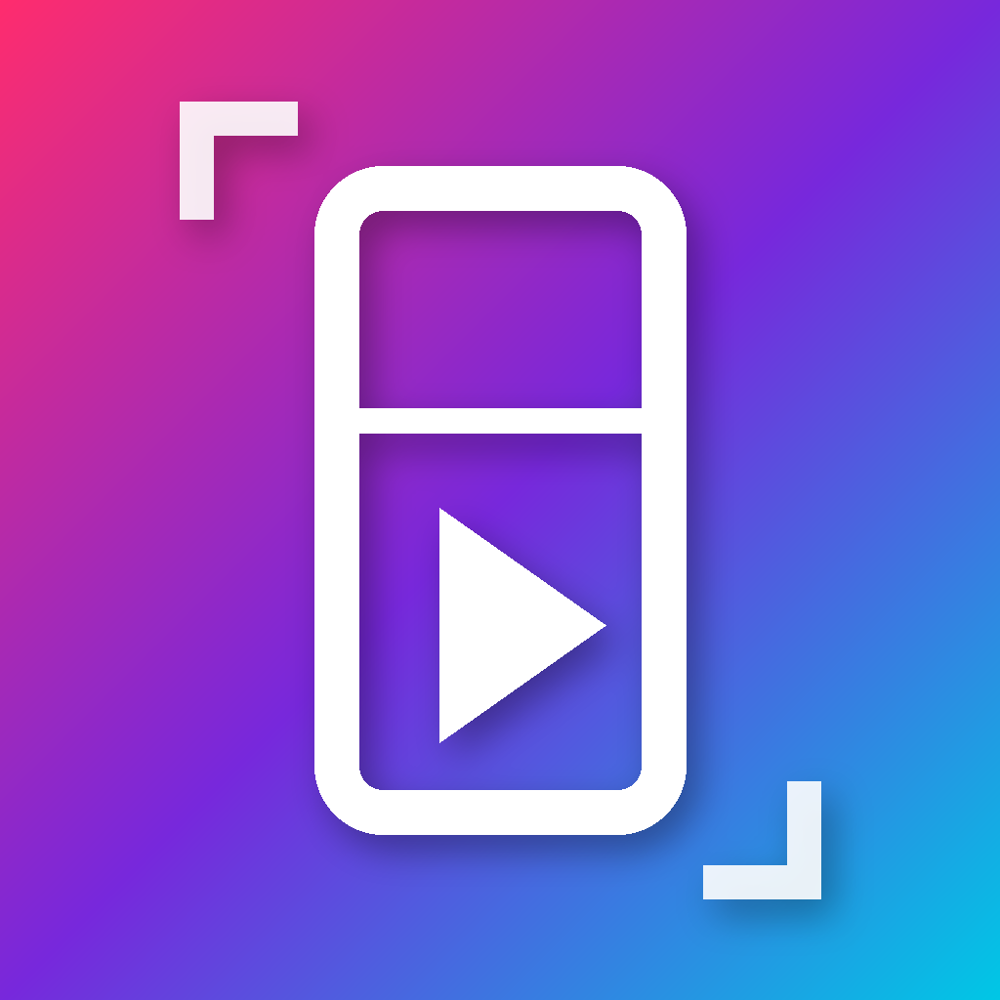

Clip Engine Studio
Clip Engine Studio is a personal desktop tool that turns livestream highlights into short vertical videos and
publishes them to the creator's own TikTok and YouTube Shorts accounts.
How it works
- The tool records public livestreams of creators who run official clipping programs that invite fans to clip and repost their streams.
- It detects highlight moments (audio peaks and chat activity) and edits them into 9:16 clips with a short caption.
- The account owner signs in once with "Login with TikTok" and Google sign-in, granting permission to post.
- Finished clips are uploaded to the owner's own accounts using the TikTok Content Posting API and the YouTube Data API.
The tool only ever posts to accounts owned by its operator. It does not collect data from other users.